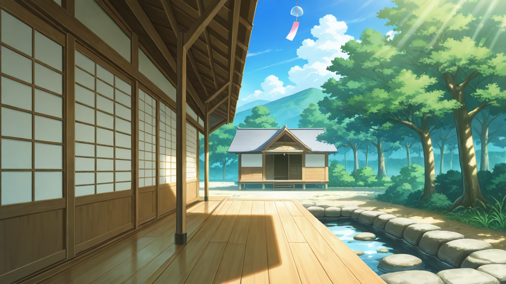

序幕・歸返與蟬聲
✦ 心境產生了波動

PSYCHOLOGICAL SUMMER VISUAL NOVEL
BEYOND THE SUMMER CICADAS
「蟬鳴停歇之前，你會選擇關上木窗，還是推開那扇門？」
進度安全儲存於本地瀏覽器（支援 3 組手動存檔＋快速存讀）
「夏末的風穿過走廊，時間彷彿正站在十字路口。」
最多保留最近 80 句對話與關鍵抉擇
探索四種夏末抉擇與關鍵事件插畫，拼湊十年前的完整記憶
調整背景音樂、夏蟬環境音與對話播放節奏